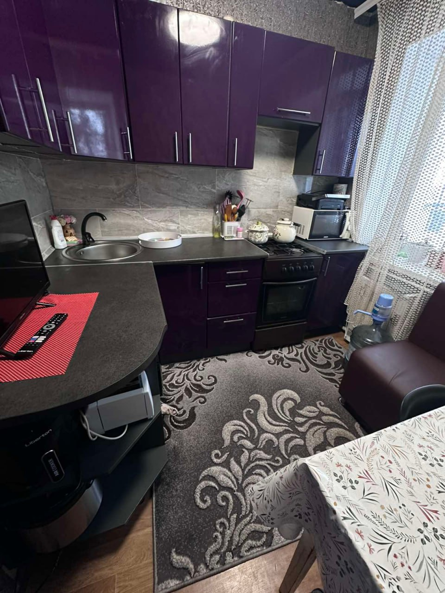
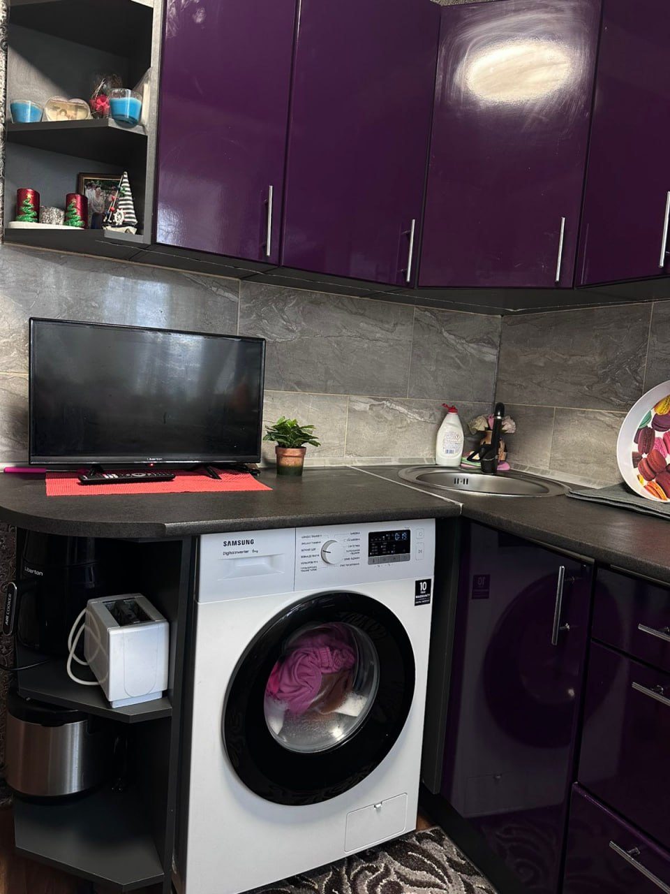
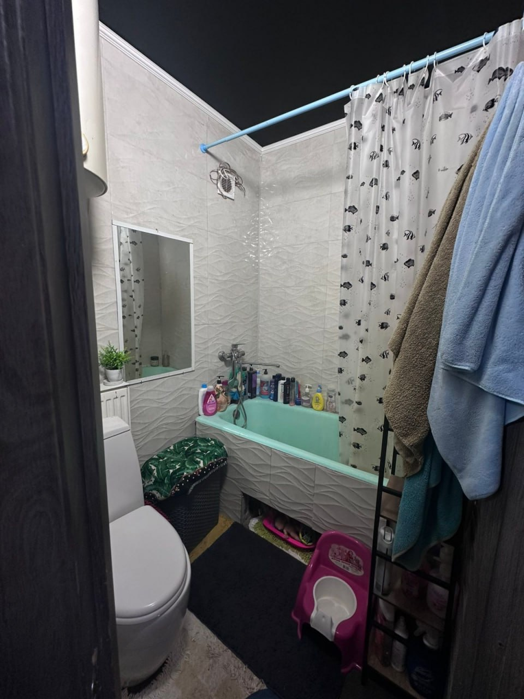
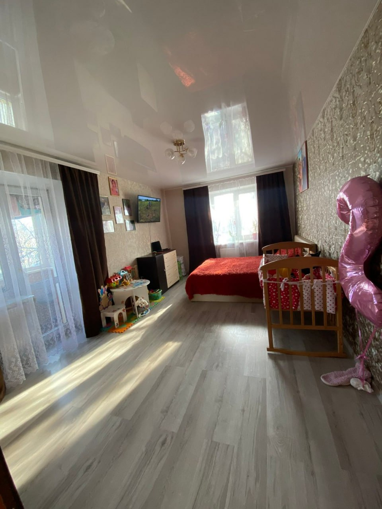
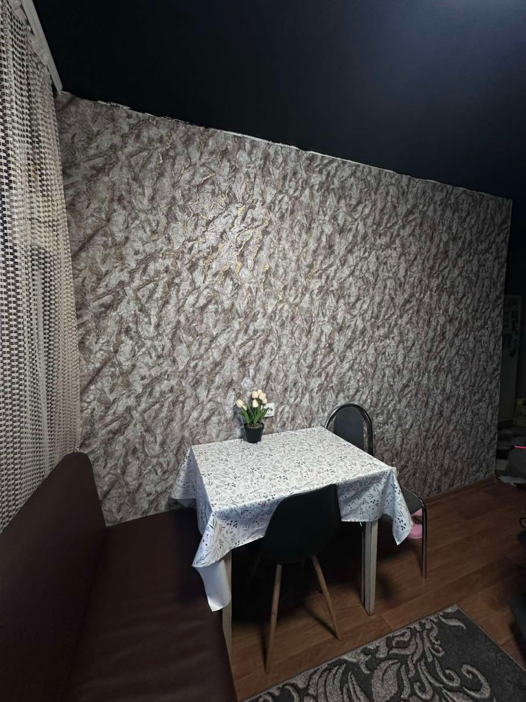
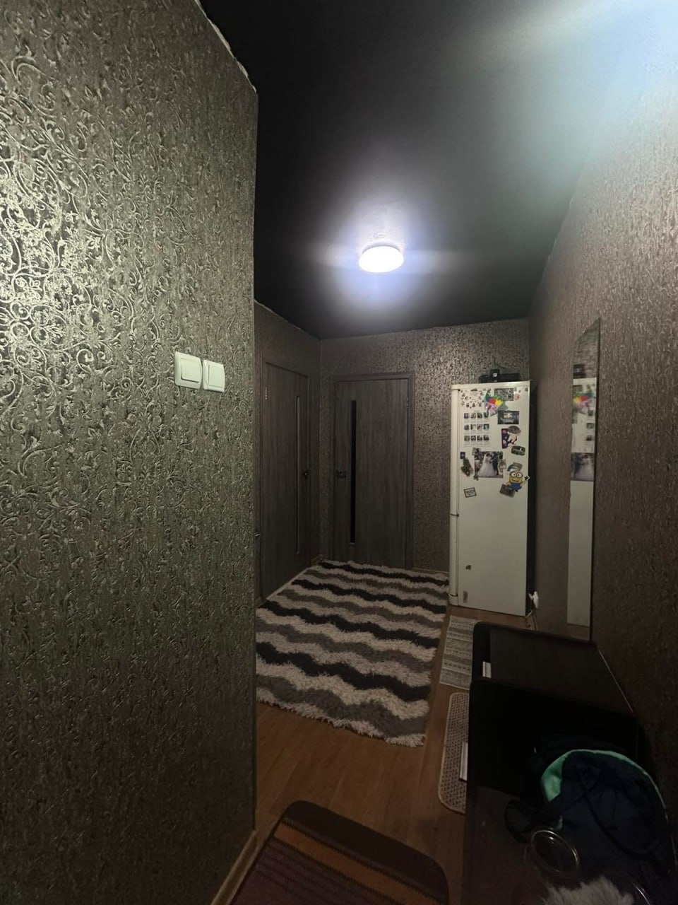

Продаж 2-кімнатної квартири з гаражем у с. Гоголів, Броварський район Пропонується до продажу затишна двокімнатна квартира у селі Гоголів, Броварського району Київської області. Квартира розташована на 2 поверсі двоповерхового будинку. Загальна площа квартири — 44 м², житлова — 31 м², кухня — 6 м². Кімнати роздільні, санвузол суміжний. У квартирі виконано якісний євроремонт, робили для себе. Оселя тепла та доглянута, з просторим коридором і заскленим та обшитим балконом. Квартира продається з меблями та побутовою технікою: холодильник, плита, духова шафа, пральна машина. Проведено швидкісний інтернет та Wi-Fi. Встановлено лічильники на всі комунікації. Важлива перевага — вода є навіть під час відключення електроенергії. Опалення — індивідуальне газове, що дозволяє самостійно контролювати витрати на тепло. Додатково до квартири: металевий гараж сарай із погребом у дворі (зручно для зберігання речей та консервації) Будинок має зручне розташування: у пішій доступності зупинка транспорту, магазини, ринок, школа, дитячий садок, аптека та інша необхідна інфраструктура. Відстань: до Броварів — 15 км до Києва — близько 35 км Продаж від власника. Перегляди — за попередньою домовленістю. Можливе придбання за державними програмами: єВідновлення, постанова №280, субвенції.